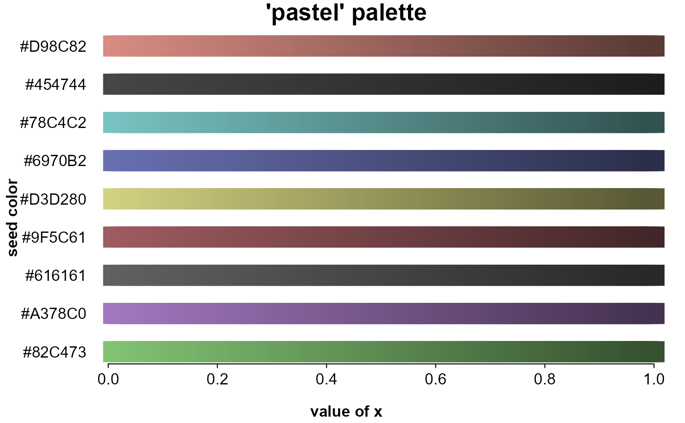
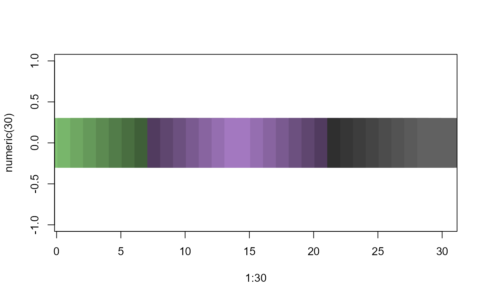
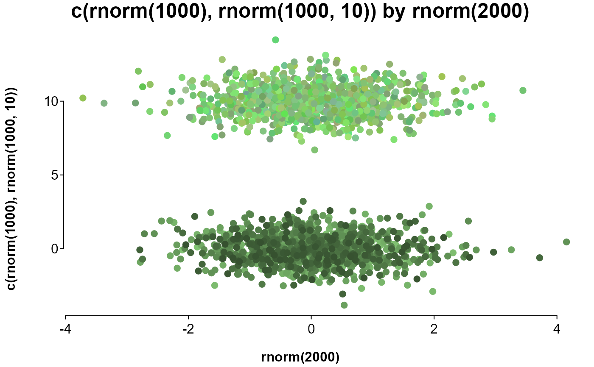

Get a prespecified set of 9 colors, or a set of graded or random, potentially grouped colors.
Usage
splot.color(x = NULL, by = NULL, seed = "pastel", brightness = 0,
luminance = 0, opacity = 1, extend = 0.7, lighten = FALSE,
shuffle = FALSE, flat = TRUE, method = "scale", grade = FALSE,
decreasing = FALSE, nas = "#000000")Arguments
- x
dictates the number and shade of colors. If a single value, returns that many samples of the first
seedentry. If a vector, returns a color for each entry. If numeric, a single seed color is sampled in order of the vector. If a character or factor, a separate seed color is assigned to each level, then sampled within levels. Values or vectors in a list are each assigned a seed color.- by
a vector to group
xby; each level is assigned a seed color.- seed
a vector of color names or codes to adjust from, lining up with levels of
xorby, or the name of a palette, partially matching'bright','dark','pastel', or'grey'.- brightness
adjusts the RGB values of the seed color, usually between -1 and 1.
- luminance
adjusts the white levels of the seed color, usually between -1 and 1.
- opacity
sets the opacity of the seed color, between 0 and 1.
- extend
if
method='scale', extends the range of the gradient beyond the sampled range, making for more similar colors (defaults is .5, with 0 sampling the full range). Ifmethod='related', increases the amount any of the RGB values can be adjusted, making for potentially more different colors (default is 2).- lighten
logical; if
TRUE, scaled colors are lightened instead of darkened. Only applicable ifmethod='scale'.- shuffle
logical; if
TRUE, scaled colors are shuffled. Only applicable ifmethod='scale'.- flat
logical; if
FALSEandxis a character, factor, or list, orbyis not missing, a list is returned.- method
a character setting the sampling method: If
'related'('^rel|^ran|^o'), RGB values are freely adjusted, resulting in similar colors. If'none'('^no|^f|^bin'), Seed colors are simply repeated in each level (sampling is off). Otherwise, RGB values are adjusted together, resulting in a gradient.- grade
logical; if
TRUE, seeds are adjusted on the scale of numericxs. Otherwise, seeds are adjusted in even steps along numericxs.- decreasing
logical; if
FALSE, assigns colors to numericxs in increasing order.- nas
value to replace missing values with.
Details
If x and by are not specified (or are characters with a length of 1, in which case they
are treated as seed), only the seed palette is returned.
To expand on a palette, seed colors are assigned to groups, and variants of each seed are assigned to values or levels within groups, or randomly or as a gradient if there are no values or level to assign to.
Seed colors are assigned to groups. If x is a character or factor and no by has been
specified, groups are the unique levels of x. If by is specified and is a character or
factor, or has fewer than 10 unique levels, groups are levels of by. If x is a list,
groups are list entries.
The number of variants for each seed color is determined either by a value (if the value has a length
of 1; e.g., x=10), the vector's length (if x is numeric), or the count of the given level
(if x is a factor or character vector).
Examples
# including no arguments or just a palette name will only return
# the palette as a character vector
pastel_palette <- splot.color()
dark_palette <- splot.color("dark")
# entering a number for x will generate that many variants of the first seed color
red_scale <- splot.color(10, "red")
# entering a list of values as x will return that many variants of the associated seed
red_and_green_scales <- splot.color(list(10, 10), seed = c("red", "green"))
# this shows gradients of each color in the default palette
# a list entered as colorby is treated as arguments to splot.color
# periods before the position name refer to the internally assembled data
splot(
rep(splot.color(), each = 100) ~ rep.int(seq.int(.01, 1, .01), 9),
colorby = list(.x, .y),
lines = FALSE, mar = c(2, 4, 0, 0), cex = c(points = 3), leg = FALSE, pch = 15,
title = "'pastel' palette", labx = "value of x", laby = "seed color"
)

# colors graded by value, entered in a list
plot(
1:30, numeric(30),
pch = 15, cex = 10,
col = splot.color(list(1:8, c(7:1, 1:7), 8:1))
)

# comparing sampling methods:
# on top are 1000 similar colors, with different RGB ratios
# on bottom are 268 colors with the same RGB ratio at different levels
splot(
c(rnorm(1000), rnorm(1000, 10)) ~ rnorm(2000),
lines = FALSE,
colors = c(splot.color(1000), splot.color(1000, method = "related"))
)
